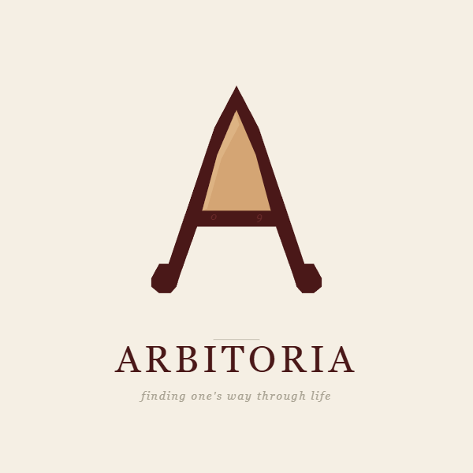

Notes from After the Pyramid
"AI is made of 64-bit. Humans are made of LifeBite." — from the manifesto
For five thousand years, society has been organized as a pyramid. The shape still stands. The interior weight has already inverted.
Birth rates collapse. Loneliness becomes routine. People rot inside an exterior that still looks fine. This is not a crisis of any one nation. It is the late stage of a structure that has reached its limit.
The proposal: change the basic unit of society itself. Not "the one" (the individual), but another one — the third existence that lives in the space between two people. Mathematically: 1+1 ≠ 2. 1+1 = 2.3. The 0.3 is the relationship itself.
This is enacted through three pillars, all unified by one principle — the Sovereign Filter: I decide what enters my consciousness.
The bubble is not the byproduct of the pyramid. The bubble is the pyramid. Squeeze the bubble, and the original form reveals itself.
From individual evaluation and surface signals (credentials, scores)
To contextual learning, inner cultivation, and training the gap between stimulus and response.
From the exposure algorithm and ad-funded attention economy
To a trust algorithm prepaid by curated relationships — a world already paid for before being seen.
From default exposure with manual blocking, current-coordinates as ID
To default blocking with ticket-based permission, and process-as-identity (LifeBite accumulation).
Detailed in the full manifesto, available in English and Korean.
Starting 2026-05-22, the author is publicly attempting — for 30 days — to send this manifesto to one specific person who might be able to think it forward.
That person is Andrej Karpathy. There is no introduction. No connection. Just consistent public presence, recorded transparently — whether it succeeds or not.
Daily updates: Twitter / X · Weekly synthesis: Substack · Full archive: GitHub
The journey is itself a demonstration of the manifesto's principles: process over result, time accumulation as identity, trust through consistency.
Anyone can begin today, with one other person. No infrastructure needed.
Send them the manifesto. Read it within a week. Talk for an hour about what landed.
A shared daily LifeBite exchange. Pooling one small expense. A "no-ticket-no-contact" rule for your phone for a week. Choose one.
Write down what changed — in your day, in the relationship, in how you noticed your surroundings.
Continue. Expand to three people. Or stop. All three are legitimate. The recording itself is the value.
If you start, open an issue and share what you learn. Your report becomes part of the seed for the next cell.
This manifesto was not written by AI. It was written by a human, with AI as a thinking partner.
Over several long conversations with Claude (Anthropic), ideas were proposed, challenged, refined, named. Some came from the human. Some came from the AI. Most came from neither alone — they emerged in the space between.
AI is not a replacement for human thought.
AI is a companion that can hold space for thought that one person alone could not generate.
This methodology is itself part of the manifesto's argument. You can fork this work and continue thinking with AI. The path is open. The full conversations are archived on GitHub.
5,000년 동안 인류 사회는 피라미드 형태로 작동해왔다. 외형은 아직 멀쩡하다. 그러나 내부의 무게 분포는 이미 역전된 지 오래다. 출산율 0.7, 1인주의의 극단, 의식의 알고리즘 종속 — 모두 같은 한 시스템의 말기 현상이다.
이 매니페스토는 진단에 멈추지 않는다. 사회의 기본 단위를 "1인"에서 "또 다른 하나"로 — 두 사람 사이의 공간에 존재하는 제3의 존재로 — 옮길 것을 제안한다. 1+1=2가 아니라 1+1=2.3. 그 0.3이 관계 그 자체다.
세 기둥: 맥락을 가르치는 교육, 신뢰로 작동하는 네트워크, 주권적 필터로서의 아이덴티티. 세 기둥을 관통하는 단 하나의 원리는 — 내 의식에 무엇이 들어올지를 내가 결정한다.
이 작업은 한 인간이 Claude(AI)와 함께 사색하며 만들었다. 그 자체가 매니페스토의 핵심 메시지 — AI는 인간을 대체하지 않는다. 인간과 함께 더 깊이 사색한다 — 의 라이브 증거다.
지금부터 30일 동안, 작성자는 이 매니페스토를 안드레 카파시에게 닿게 하려는 모든 시도를 공개적으로 기록한다. 그가 응답하든 응답하지 않든 — 이 30일 자체가 매니페스토의 원리(과정 > 결과, 시간 누적 = 정체성, 일관성 = 신뢰)의 시연이 된다.